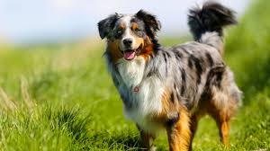

Golden Retrievers: They are the top chosen family dog in America! They're a good choice for the family because they are friendly with children and other animals. They're quite simple to train, and they're very affectionate! These dogs are beautiful, kind, they can help the blind as well as help you find certain things! Golden retrievers are all around amazing dogs.
Border Collie: These dogs are highly intelligent and easy to train, however, they needs lots of outside running time! A lack of it can cause them to rip up or destroy things around your house. They live up to 17 years and are extremely beautiful dogs!

Australian Shepherd: These shepherds are my personal favourite. They're not only gorgeous, they are one of the easiest breeds to train and one of the smartest. Australian Shepherds are protective and affectionate to their owners. Their coats are fluffy and soft, and their eyes are often one brown and one blue. These dogs are also very active, needed about two hours of exersise per day.
That was a short list of my top three favourite dog breeds, I enjoy meduim to large sized dogs. I love when they're fluffy, and these particular ones always look like they're smiling! All dogs are awesome, but if I were to get a dog, it would be one of these three! Since they're all very active, it would be a good motivation for the owner to get active as well considering you would have to walk/run your dog for 1-2 hours per day. Dogs can keep you healthy and active among other things. All in all, they're a wonderful companion.